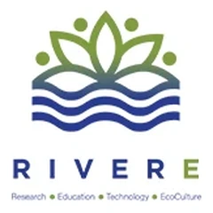
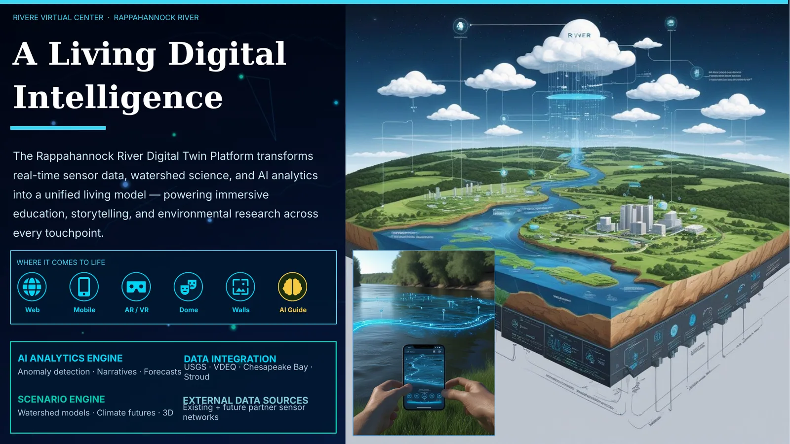
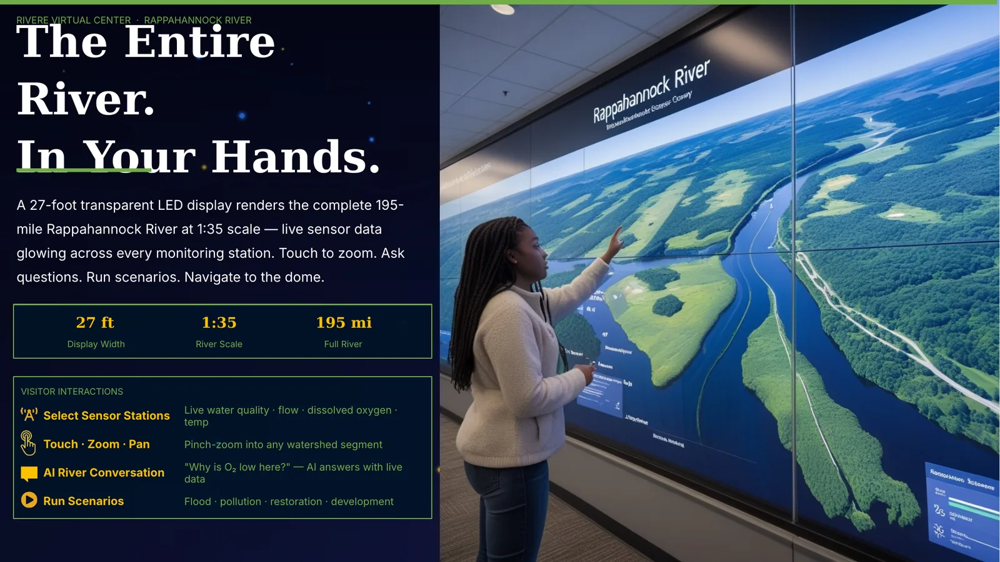
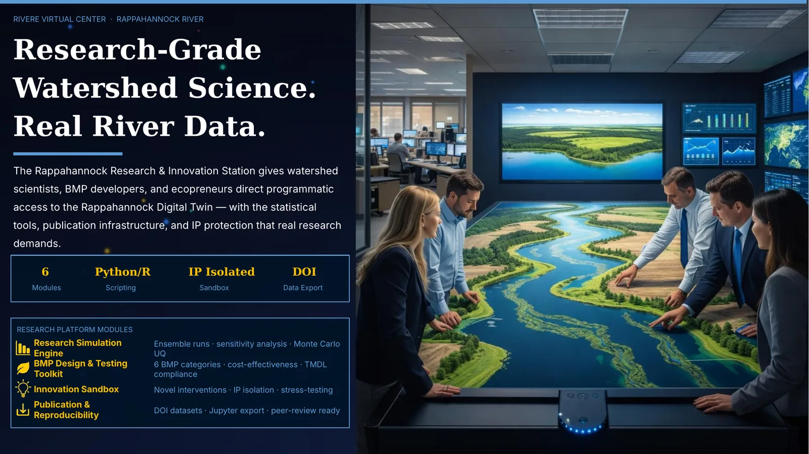
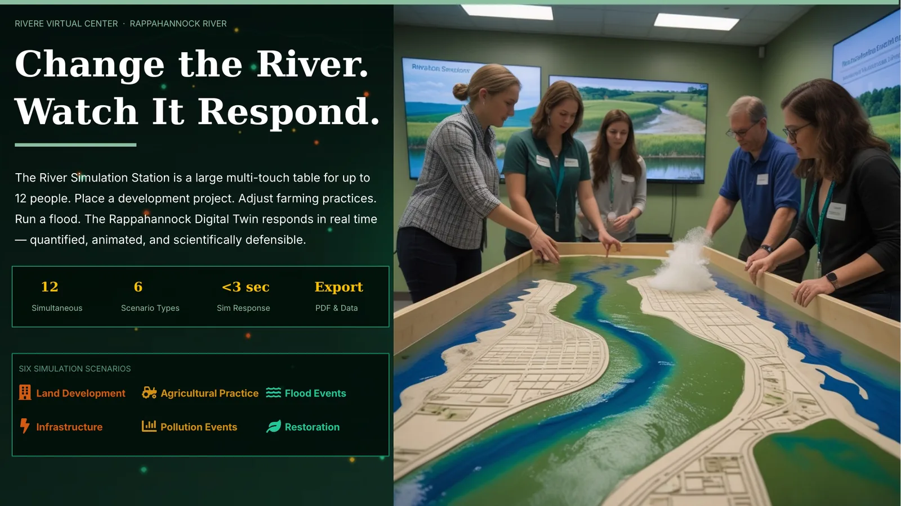
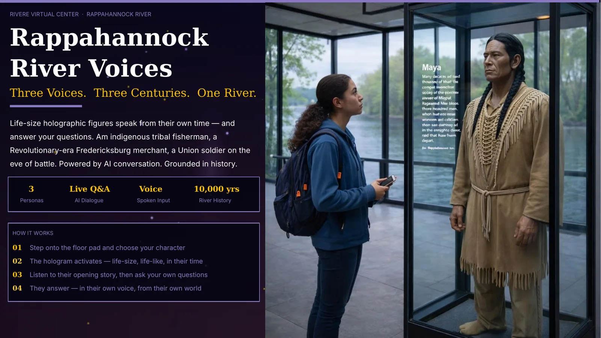
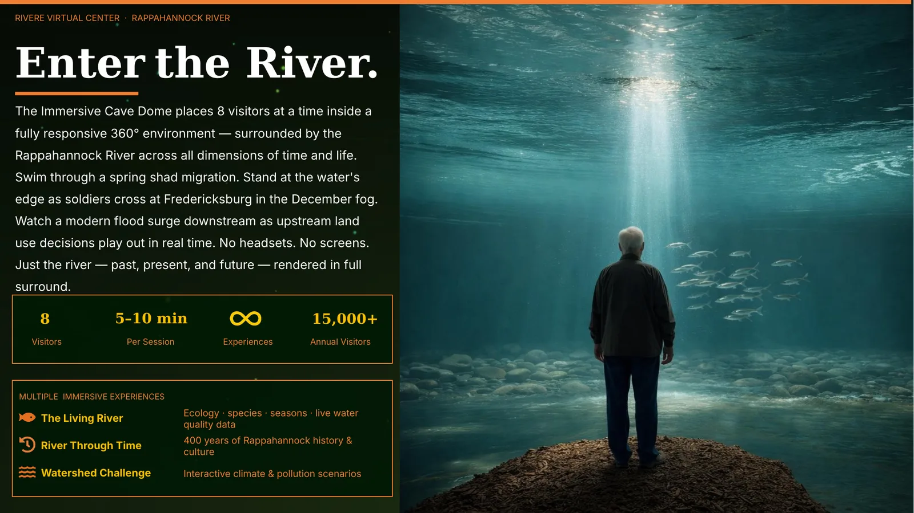
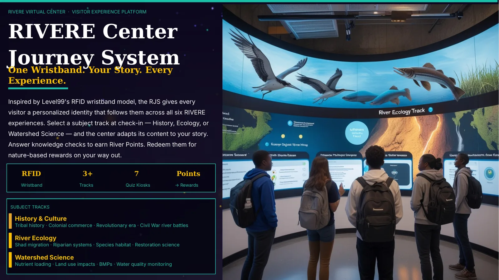
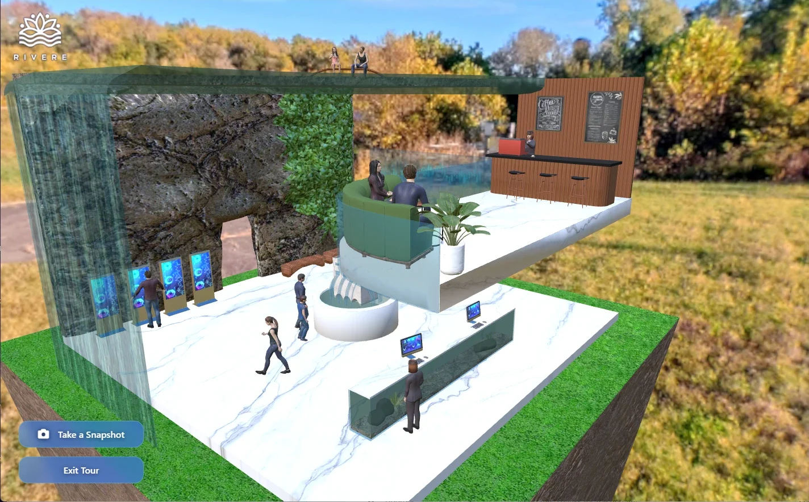

RIVERE Ecological Center
Planning $6 million of immersive technology into a new building.
$6Mimmersive technology roadmap

- Client
- RIVERE Ecological Center
- Company
- Ruscella Immersive · 2025
- Role
- Chief Creative Officer and Co-Founder
- Discipline
- Consulting: funding support, presentations, video, immersive experiences and immersive-first building design

Challenge
RIVERE was planning a new ecological center and wanted immersive technology designed into the building from the start.
Solution
- Worked with the architects on an immersive-first building design.
- Delivered a roadmap for integrating $6 million of immersive technology.
- Built the RIVERE Virtual Center, a 3D experience of the center online.
My role
- Consulted on RIVERE’s initiative, helping with its funding efforts
- Developed presentations, videos and immersive experiences
- Worked with the architects on the immersive-first building design
- Managed the project and the client relationship
- Virtual center: designed the experience, developed the 3D models, and guided camera, lighting, animation and web integration with a team of 3
Highlights








Results
- The immersive-first building design with the architects is complete.
- RIVERE is now pursuing final investment to build the Center.